This is the final and most complex problem in our series of demo codes for the unsteady heat equation. We re-visit the moving domain problem considered in the previous example and solve it with a combination of spatial and temporal adaptivity.
 , bounded by the coordinate axes and the time-dependent ellipse , bounded by the coordinate axes and the time-dependent ellipse 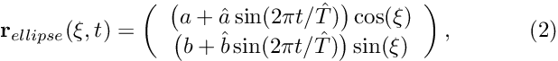 subject to Neumann boundary conditions,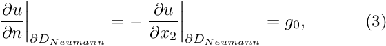 along the horizontal domain boundary![$ \partial D_{Neumann} =
\{ (x_1,x_2) | x_1 \in [0,1], x_2=0 \} $](form_4.png) , and to Dirichlet boundary conditions, , and to Dirichlet boundary conditions, 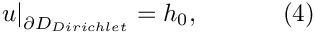 elsewhere.
Sketch of the time-dependent domain and the boundary conditions. 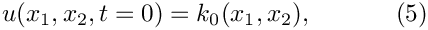 where the functions 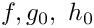 and are given. are given. |
![\[
\sum_{i=1}^2\frac{\partial^2 u}{\partial x_i^2}
= \frac{\partial u}{\partial t} + f\left(x_1,x_2,t\right),
\ \ \ \ \ \ \ \ \ \ (1)
\]](form_0.png)
We choose the functions and so that
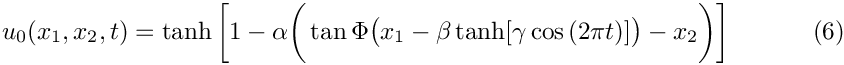
is the exact solution.
The solution represents the "usual" tanh profile, whose steepness is controlled by the parameter  so that for
so that for  the solution approaches a step. The step is oriented at an angle 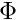 against the
the solution approaches a step. The step is oriented at an angle 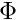 against the  -axis and its position varies periodically. The parameter
-axis and its position varies periodically. The parameter  controls the amplitude of the step's lateral displacement, while 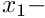 determines the rate at which its position changes. For
controls the amplitude of the step's lateral displacement, while 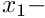 determines the rate at which its position changes. For  , the step remains stationary for most of the period and then translates rapidly parallel to the -axis, making this a very challenging problem.
, the step remains stationary for most of the period and then translates rapidly parallel to the -axis, making this a very challenging problem.
Background: Combined spatial and temporal adaptivity
When solving the above problem with pure spatial adaptivity, we observed that the error of the computed solution increased noticeably during phases when the "step" moved rapidly through the domain, suggesting that the error is due to the temporal rather than the spatial discretisation. If you attempted the exercises suggested at the end of that demo problem, you will have confirmed this by observing that the error is reduced when the time-integration is performed with a smaller timestep. Since the solution only undergoes rapid changes during short periods of time, the use of temporal adaptivity is highly desirable. Before demonstrating that the combined use of temporal and spatial adaptivity only requires trivial changes to the driver code with purely spatial adaptivity, we briefly comment on the strategy employed by oomph-lib's doubly-adaptive unsteady Newton solver
This Newton solver performs the spatial and temporal adaptations sequentially, as follows:
- Given a mesh and the solution on that mesh at time
 , we first advance the solution to time 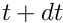, adjusting the timestep 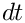 until the global temporal error norm computed by
, we first advance the solution to time 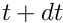, adjusting the timestep 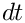 until the global temporal error norm computed by Problem::global_temporal_error_norm()falls below the target error specified by the (double) argumentepsilon_t. The (double) argumentdt, specifies the suggestion for the timestep. - Once a temporally accurate solution has been computed on that mesh, we perform up to
max_adaptspatial adaptations to reduce the spatial error. We re-compute the solution on the adapted meshes, using the (fixed) timestep selected previously by the temporal adaptation. Once the spatial adaptations are complete, we could, in principle, re-evaluate the temporal error and, if required, re-compute the timestep yet again – at a significant additional cost. We omit this further adjustment and accept the solution "as is".
As before, the boolean argument first indicates if the first timestep is being computed (see the
example without temporal adaptivity for more information on this important issue). As in the case of pure temporal adaptivity, the adaptive unsteady Newton solver returns a suggestion for the size of the next timestep.
The implementation
Since the spatial and temporal adaptations are performed independently, adding "double adaptivity" to the existing driver code with pure spatial adaptivity only requires the implementation of the additional member function Problem::global_temporal_error_norm(). In the current problem we can use the one that we created for the example with pure temporal adaptivity. Furthermore, we pass a true boolean flag to the constructor of the BDF<2> timestepper, to make it adaptive. That's all! Apart from a few (optional) improvements to the dump/restart functions (discussed below), the code does not require any other changes.
Some results
The figure below shows a snapshot of the animated solution, obtained from the doubly adaptive simulation.

When viewing the animation of the solution, note how the time-bar grows much more rapidly during phases when the solution only changes slowly, reflecting the larger timestep used during these phases.
The time-traces shown below compare the exact and computed solutions, and document the variations in timestep and the norm of the error throughout the simulation, for a temporal error target of epsilon_t = 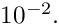 The plots show clearly how the adaptive timestepper selects a much larger timestep during the phases when the solution only changes slowly. However, the error during phases of rapid change is still relatively large – the comparison between the exact and computed solution shows that the two are not graphically indistinguishable. We ought to do better!

The time-traces below show the results from a second simulation with a smaller target error of epsilon_t = 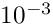. The exact and computed solutions are now graphically indistinguishable and the error has been reduced significantly – at the cost of having to take much smaller timesteps throughout the simulation. Without adaptive time-stepping, this simulation would become very expensive as timesteps as small as 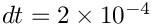 are required to properly resolve the solution during the phases of rapid change.
Comments and Exercises
Customising the dump/restart procedure
In two earlier examples, we commented on two undesirable features of the default dump/restart procedures:
- The restart files do not record the counter (stored in a
DocInfoobject) that we typically use to label the output files. Therefore the output files produced in the restarted run start with label "0", making it difficult to merge the data files from the original and restarted simulations. - In an adaptive simulation, the restart files do not record the adaptive timestepper's suggestion for the next timestep, therefore the first timestep in the restarted simulation is performed with the timestep that was used when the solution was dumped to disk, leading to slight differences in the history of the timesteps chosen; see the plot shown at the end of the discussion of the example with purely temporal adaptivity.
To address these problems, we modified the Problem class for the present example slightly: We added the DocInfo object which stores the label for the output file to the Problem's private member data, and provide storage for the size of the next timestep suggested by the adaptive timestepper.
[We also provide a public access function, double next_dt(), to the suggested next timestep; see Do NOT use public member data in any classes .]
We initialise the output label in the Problem constructor,
and set Next_dt to the initial timestep when the initial condition is assigned in set_initial_condition():
We modify the timestepping loop so that the adaptive timestepper's suggestion for the next timestep is stored in the Problem's private data member Next_dt, which is accessible via the public member function next_dt():
Since the Problem now has access to the DocInfo object (and therefore to the label that we use to identify the output files), and to the suggested next timestep, we write both to the restart file, adding brief comments behind the "raw" data.
These values are then read during the restart:
[The slightly clumsy read procedure is required to ensure that the comments that follow the "raw" data are ignored.]
Following the assignment of the initial conditions, the first timestep for the timestepping loop in the main function can now be obtained from next_dt() since Next_dt will either have been set to the actual first timestep used when setting up the initial conditions at time 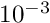, or to the next timestep that had been suggested by the adaptive timestepper when the restart file was created.
Here are the time-traces for the solution and the timesteps from the original and the restarted simulations – apart from the (very small) roundoff errors due to the finite precision in which all data is recorded in the restart files, they are now in perfect agreement.

Do NOT use public member data in any classes
A little aside: Yes, we really do recommend storing the suggestion for the size of the next timestep as private member data and providing an access function to it. This must seem like (and indeed is) slight overkill in the present context: Why can't we just store it as public member data and avoid having to write the access function? The answer is: Because public data is bad and it's a good habit to avoid it as a matter of principle – even in trivial examples.
Source files for this tutorial
- The source files for this tutorial are located in the directory:
demo_drivers/unsteady_heat/two_d_unsteady_heat_2adapt/ - The driver code is:
demo_drivers/unsteady_heat/two_d_unsteady_heat_2adapt/two_d_unsteady_heat_2adapt.cc
PDF file
A pdf version of this document is available. \